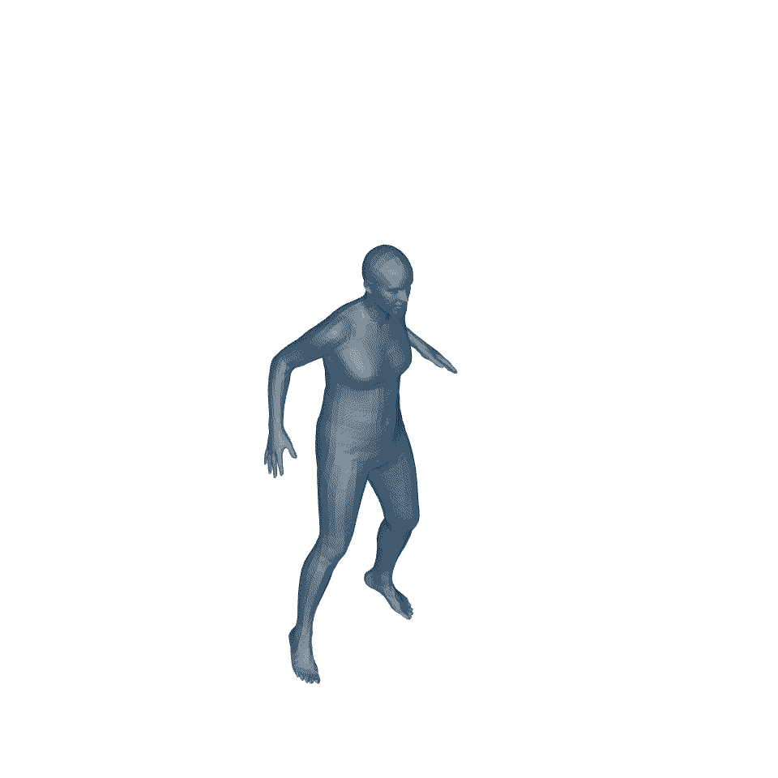

Probabilistic human motion prediction aims to forecast multiple possible future movements from past observations. While current approaches report high diversity and realism, they often generate motions with undetected limb stretching and jitter. To address this, we introduce SkeletonDiffusion, a latent diffusion model that embeds an explicit inductive bias on the human body within its architecture and training. Our model is trained with a novel nonisotropic Gaussian diffusion formulation that aligns with the natural kinematic structure of the human skeleton. Results show that our approach outperforms conventional isotropic alternatives, consistently generating realistic predictions while avoiding artifacts such as limb distortion. Additionally, we identify a limitation in commonly used diversity metrics, which may inadvertently favor models that produce inconsistent limb lengths within the same sequence. SkeletonDiffusion sets a new benchmark on three real-world datasets, outperforming various baselines across multiple evaluation metrics.